Think aloud: I need to complete the configured account access before starting the product task.
URL/context: https://weavz.io/
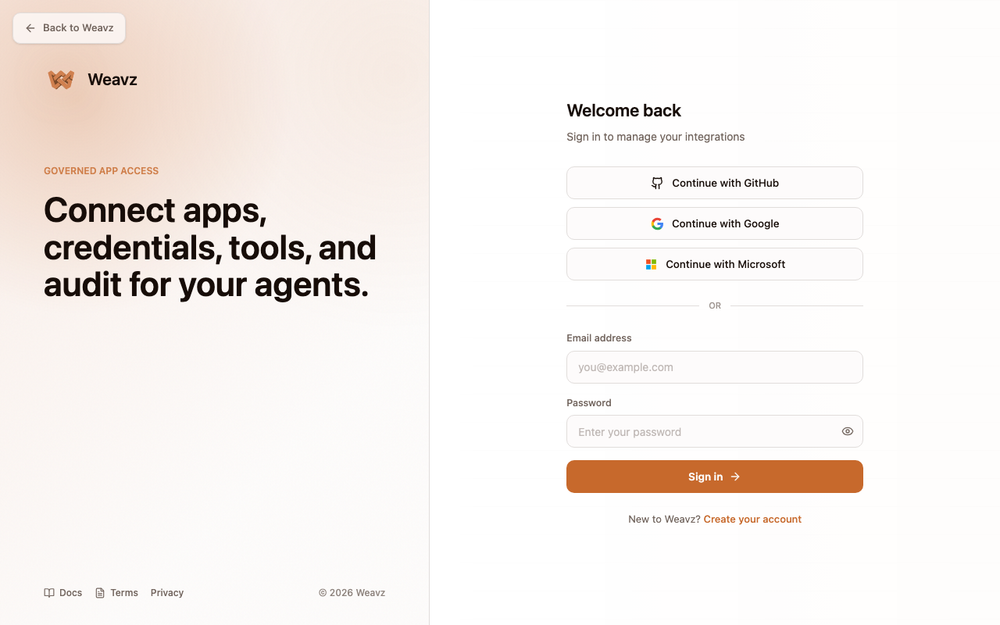
Think aloud: This field needs the account detail I was given, so I will fill it before submitting the form.
URL/context: https://dashboard.weavz.io/login?marketingReturnTo=https%3A%2F%2Fweavz.io%2F
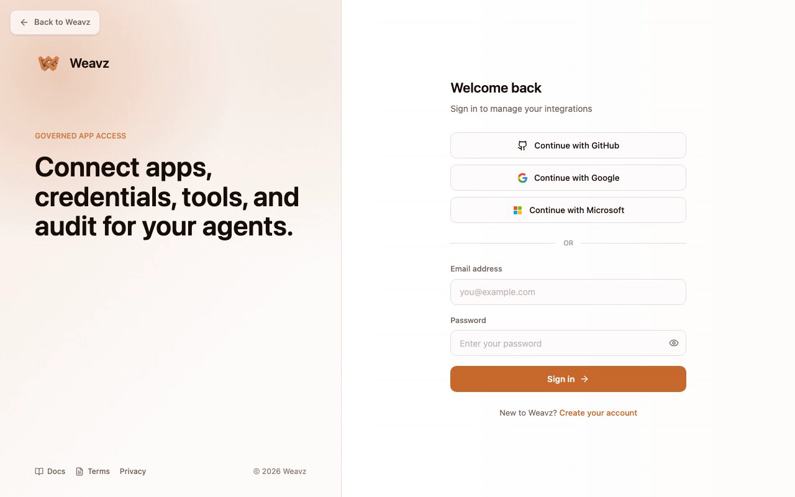
Think aloud: This field needs the account detail I was given, so I will fill it before submitting the form.
URL/context: https://dashboard.weavz.io/login?marketingReturnTo=https%3A%2F%2Fweavz.io%2F
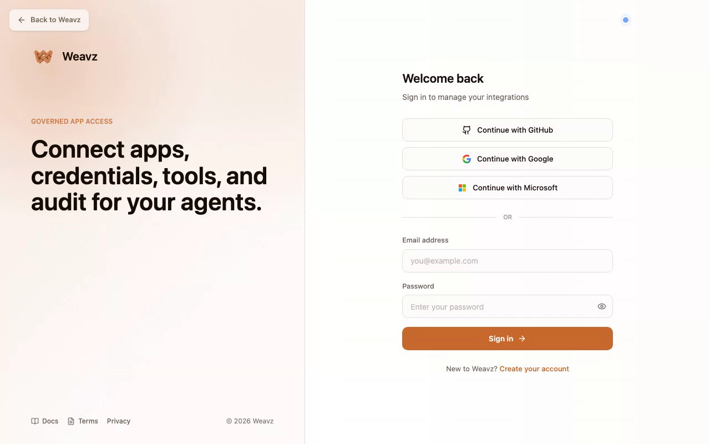
Think aloud: Email and password are in, now let's get into the dashboard and start wiring up a connection.
URL/context: https://dashboard.weavz.io/login?marketingReturnTo=https%3A%2F%2Fweavz.io%2F
Think aloud: Fine, first login wants me to spin up an org before I even see the dashboard. Let's just name it and move on.
URL/context: https://dashboard.weavz.io/onboarding
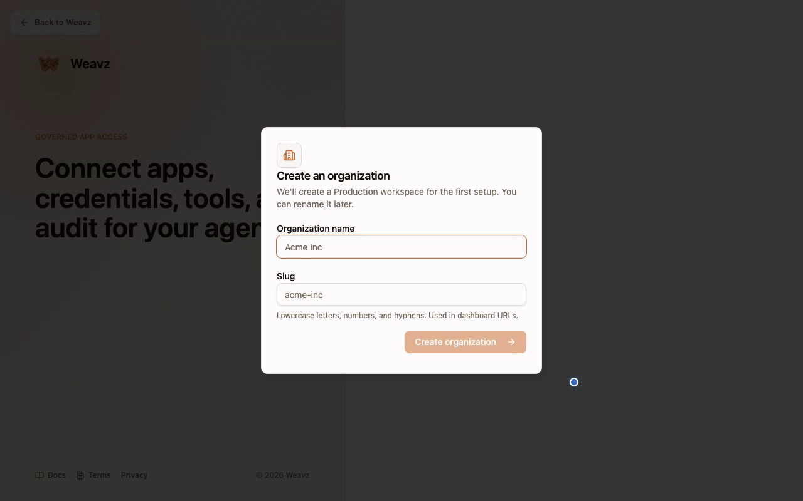
Think aloud: filled in, now let's just create the org and get to the actual dashboard already.
URL/context: https://dashboard.weavz.io/onboarding
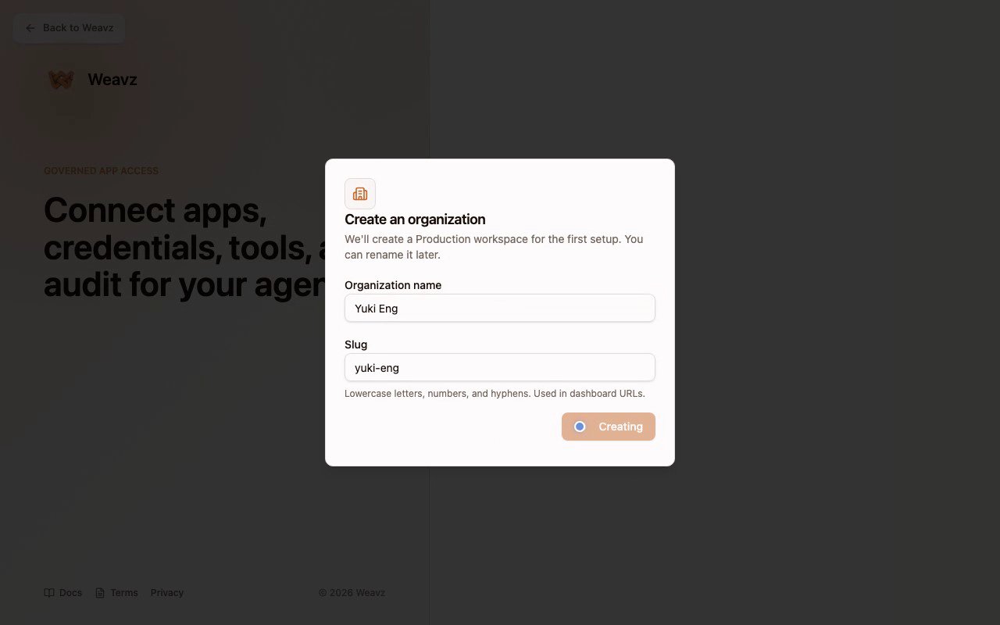
Think aloud: The product is still generating output, so I need to wait for the result instead of exploring away or stopping early.
URL/context: https://dashboard.weavz.io/onboarding
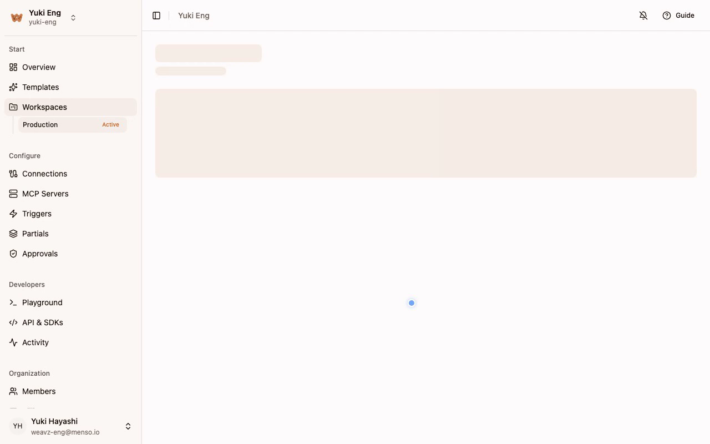
Think aloud: made, I'm in the dashboard now. Time to head straight to Connections and set up that API key.
URL/context: https://dashboard.weavz.io/workspaces/c997c44a-364d-4895-b881-c4157740f7e3
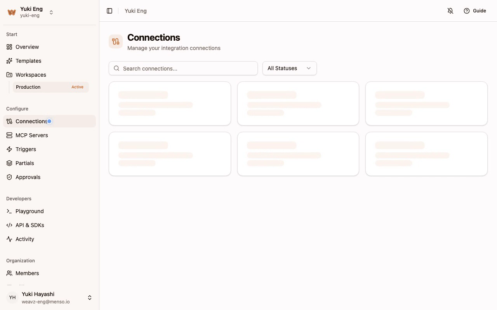
Think aloud: The connections page loaded but I only see a search box and status filter, no obvious 'New connection' button yet. Might still be loading those skeleton cards I saw a second ago.
URL/context: https://dashboard.weavz.io/connections
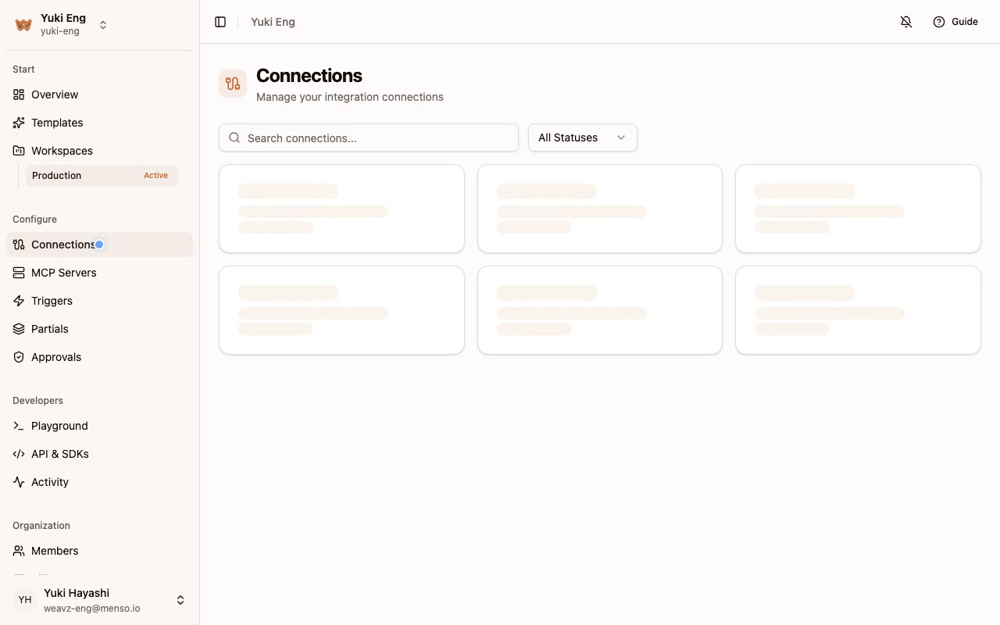
Think aloud: Search bar and status filter are here, but I still don't see any connection cards or a clear 'New Connection' button. Empty state with no obvious CTA feels off for a setup flow.
URL/context: https://dashboard.weavz.io/connections
Think aloud: Those card placeholders are still pulsing like they're loading, not empty state — probably connector templates I pick from to start a connection. Let me give it one more beat before I panic about a missing create button.
URL/context: https://dashboard.weavz.io/connections
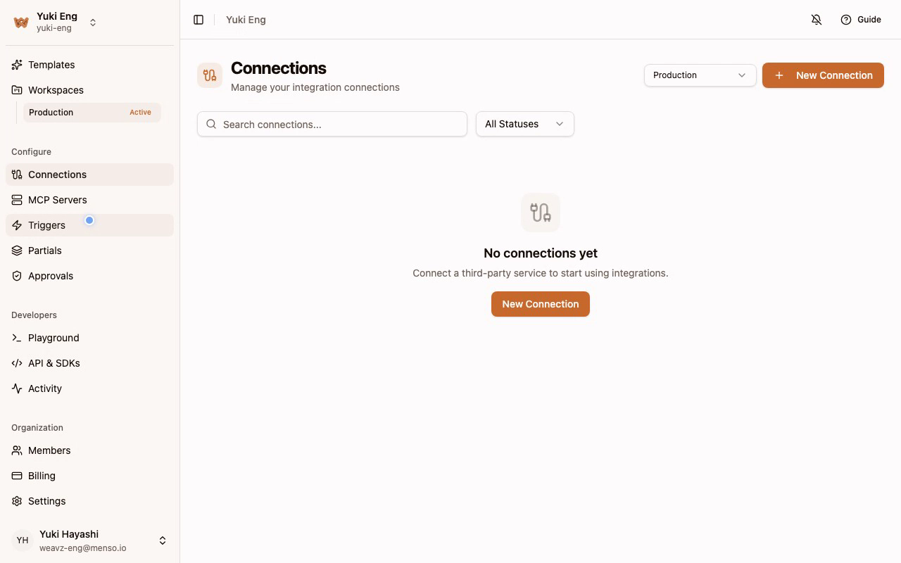
Think aloud: There it is now — 'No connections yet' with a clear New Connection button. That skeleton loading was just a slow empty state. Let me click New Connection to start setting up the API-key connector.
URL/context: https://dashboard.weavz.io/connections?workspaceId=c997c44a-364d-4895-b881-c4157740f7e3
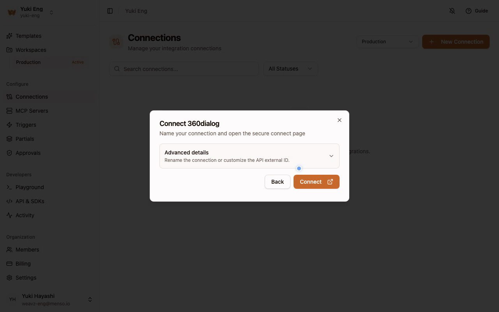
Think aloud: Wait, 360dialog opens some 'secure connect page' — that sounds like an OAuth redirect, not a plain API key field. That's not what I want; I've got an OpenWeather key ready to plug in, so let me back out and pick a connector that actually asks for an API key directly.
URL/context: https://dashboard.weavz.io/connections?workspaceId=c997c44a-364d-4895-b881-c4157740f7e3
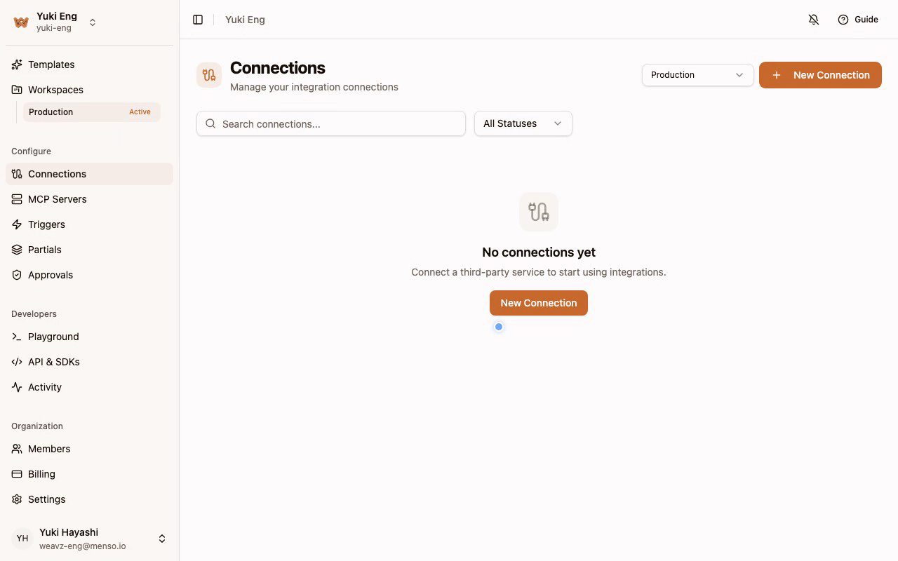
Think aloud: Good, that dialog closed and I'm back on the empty connections page. Let me open New Connection again and actually scan the list this time for something that says API key instead of grabbing the first one.
URL/context: https://dashboard.weavz.io/connections?workspaceId=c997c44a-364d-4895-b881-c4157740f7e3
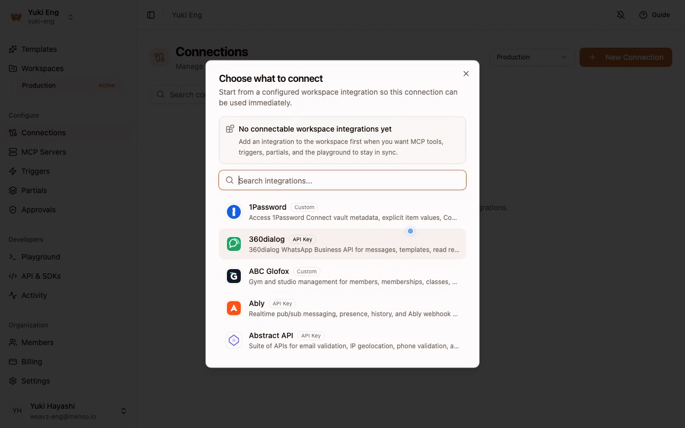
Think aloud: Long list here. Instead of scrolling forever, let me just search for something I actually have a key for — OpenWeather.
URL/context: https://dashboard.weavz.io/connections?workspaceId=c997c44a-364d-4895-b881-c4157740f7e3
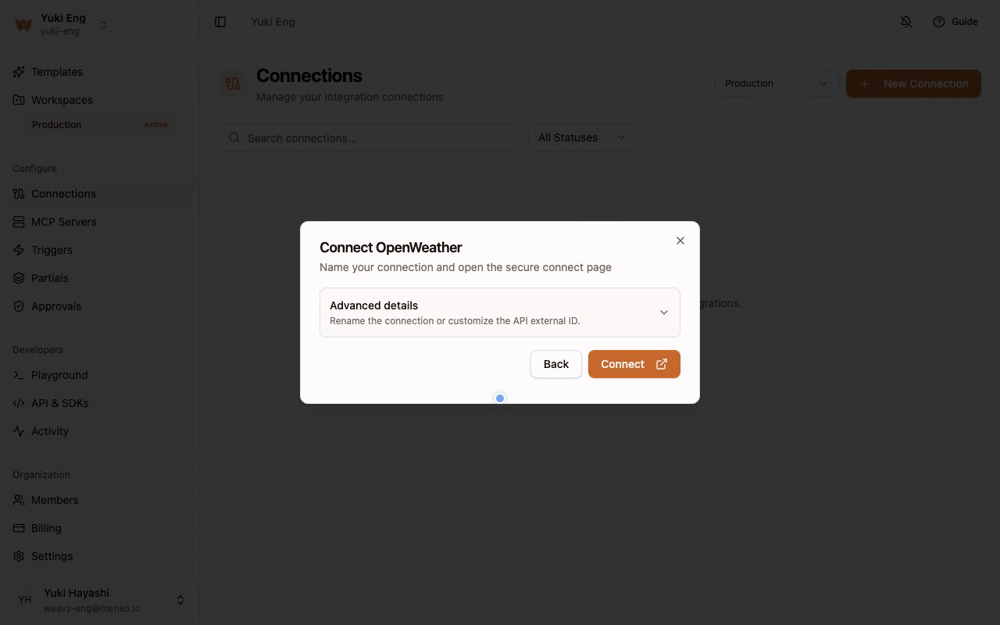
Think aloud: There it is — OpenWeather, API Key auth, and I actually have a key for that one. This is the connector I want.
URL/context: https://dashboard.weavz.io/connections?workspaceId=c997c44a-364d-4895-b881-c4157740f7e3
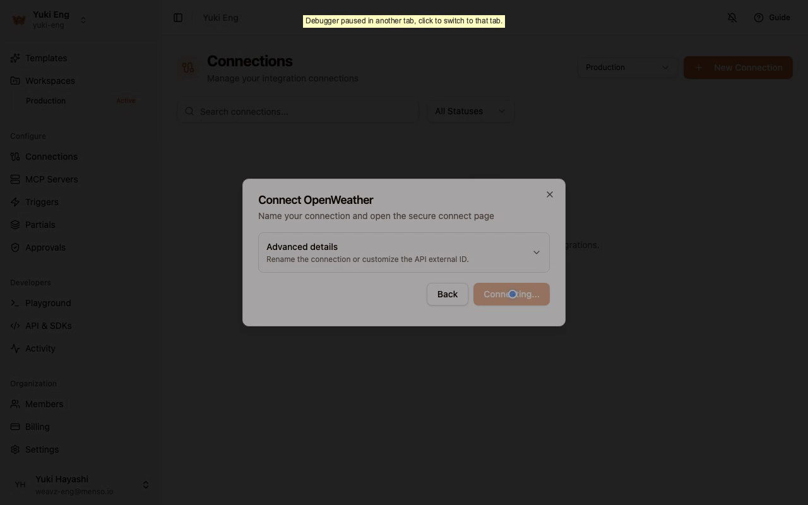
Think aloud: Now it's asking me to name the connection and hit Connect to open the secure connect page — that's probably where I paste my API key. Let's go.
URL/context: https://dashboard.weavz.io/connections?workspaceId=c997c44a-364d-4895-b881-c4157740f7e3
Think aloud: stuck on 'Connecting...' with a spinner-looking disabled button. This should pop open a secure page for pasting my OpenWeather key — let me give it a second to load instead of clicking blindly again.
URL/context: https://dashboard.weavz.io/connections?workspaceId=c997c44a-364d-4895-b881-c4157740f7e3
Think aloud: Still stuck on 'Connecting...' after all this time — no spinner update, no timeout message, nothing. This is exactly the kind of stall that makes me abandon a flow. Let me close this and check if the connection actually got created behind the scenes.
URL/context: https://dashboard.weavz.io/connections?workspaceId=c997c44a-364d-4895-b881-c4157740f7e3
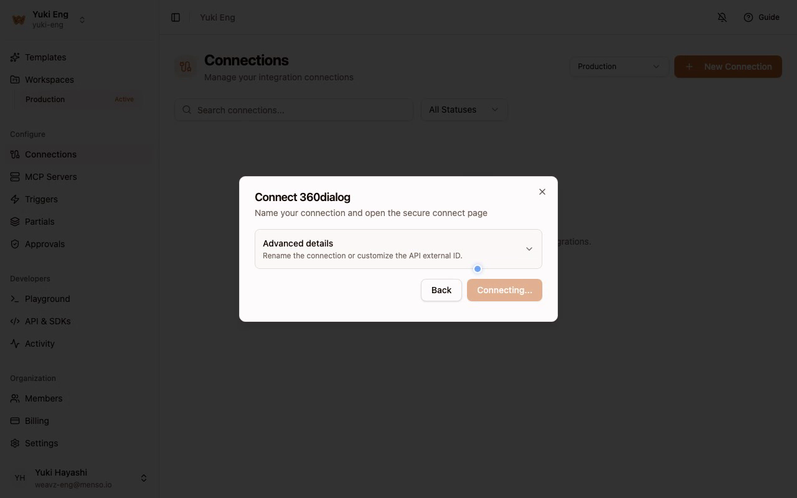
Think aloud: Back to square one — no connections yet, and my last attempt just died on 'Connecting...' with no explanation. That's stall number one. Let me try the connect flow again before I write this off completely.
URL/context: https://dashboard.weavz.io/connections?workspaceId=c997c44a-364d-4895-b881-c4157740f7e3
Think aloud: Same thing again — 'Connecting...' just sitting there disabled, no spinner change, no error, no timeout. This is the second time this exact modal has frozen on a fresh attempt. I'm not going to keep clicking New Connection hoping the third time works.
URL/context: https://dashboard.weavz.io/connections?workspaceId=c997c44a-364d-4895-b881-c4157740f7e3